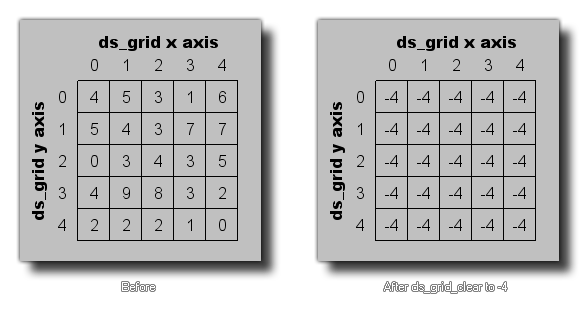

ds_grid_clear(index, val);
| Argument参数 | Description描述 |
|---|---|
| index | This index of the grid to clear.待清除的矩阵结构的索引。 |
| val | The new value for all grid cells.分配给所有单元格的新值。 |
Returns返回值: N/A无
This function can be used to clear a given ds_grid to a specific
value. All cells within the grid will then contain this value,
which can be a real number or a string. The image below illustrates
how this works:
这个函数可以被用于用一个值清空一个给定矩阵结构，这个矩阵内的所有单元
格接下来都将会包含这个既可以是字符串又可以是实数的值。下面的插图展现
了这是如何生效的：
ds_grid_resize(global.Grid, room_width / 32,
room_height / 32);
ds_grid_clear(global.Grid, -1);
The above code will resize the ds_grid indexed in the global
variable "Grid" and then clear it so that each cell holds the value
-1.
上述代码将会重新设定被索引为全局变量"Grid"的矩阵结构并且接下来
清空它以便于每一个单元格都承载值-1。
| Converted from CHM to HTML with chm2web Pro 2.85 (unicode) |